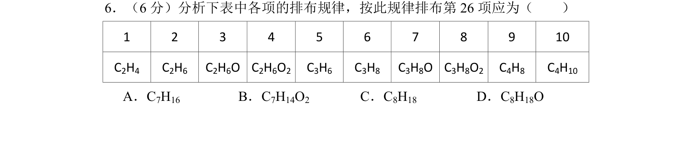
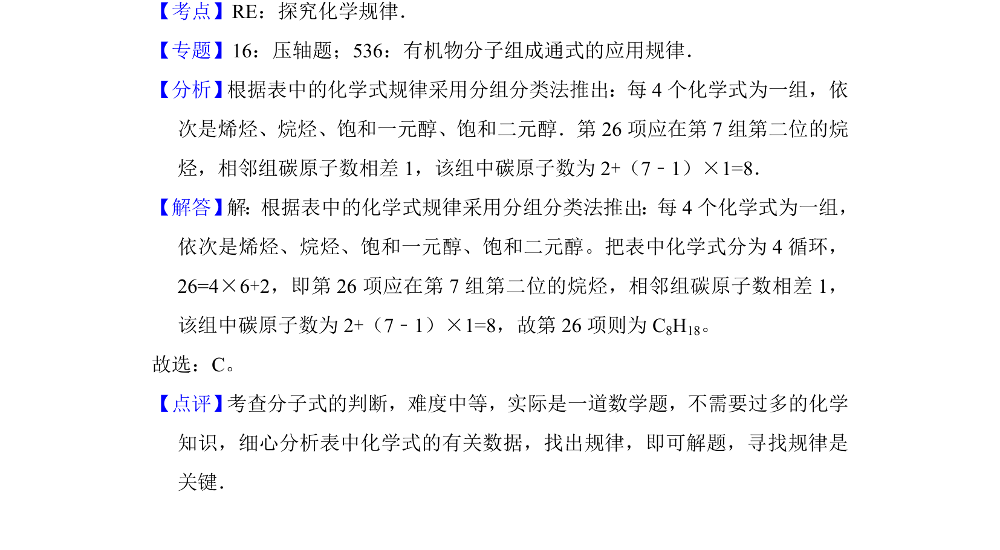

考点：探究化学规律 有机物分子组成通式 同系物

通过分析烯烃、烷烃、醇的循环排布规律，推断第26项有机物分子式。

📄 原 PDF 第 5 页：
素材/真题/吉林/2008-2024·（吉林）化学高考真题/2012年高考化学试卷（新课标）（解析卷）.pdf
6．（6分）分析下表中各项的排布规律，按此规律排布第26项应为（ ） 1 2 3 4 5 6 7 8 9 10 C2H4 C2H6 C2H6O C2H6O2 C3H6 C3H8 C3H8O C3H8O2 C4H8 C4H10 A．C7H16 B．C7H14O2 C．C8H18 D．C8H18O
【考点】RE：探究化学规律．菁优网版权所有 【专题】16：压轴题；536：有机物分子组成通式的应用规律． 【分析】 根据表中的化学式规律采用分组分类法推出：每4个化学式为一组，依 次是烯烃、烷烃、饱和一元醇、饱和二元醇．第26项应在第7组第二位的烷 烃，相邻组碳原子数相差1，该组中碳原子数为2+（7﹣1）×1=8． 【解答】 解：根据表中的化学式规律采用分组分类法推出：每4个化学式为一组， 依次是烯烃、烷烃、饱和一元醇、饱和二元醇。把表中化学式分为4循环， 26=4×6+2，即第26项应在第7组第二位的烷烃，相邻组碳原子数相差1， 该组中碳原子数为2+（7﹣1）×1=8，故第26项则为C 8H18。 故选：C。 【点评】 考查分子式的判断，难度中等，实际是一道数学题，不需要过多的化学 知识，细心分析表中化学式的有关数据，找出规律，即可解题，寻找规律是 关键．